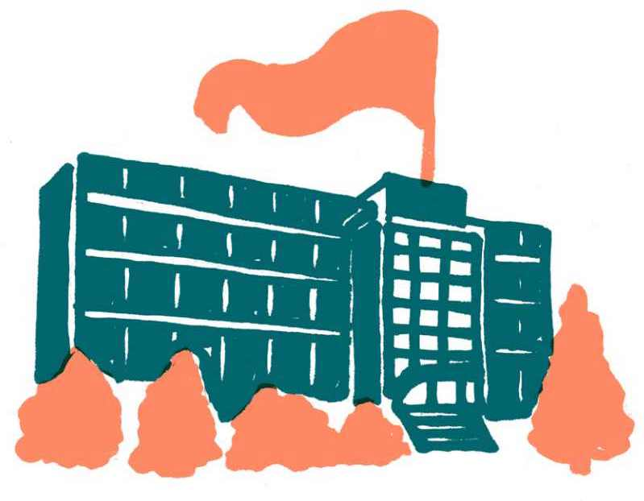
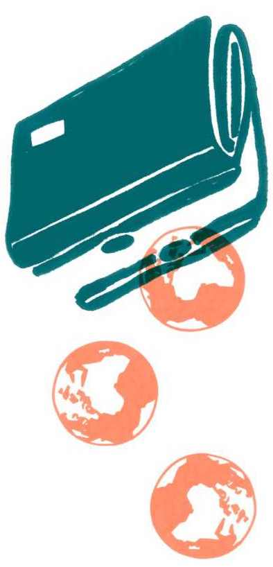

6.6 Role institucí a veřejné správy
Klimatická krize je problémem institucí. Volby jednotlivců nemohou samy o sobě způsobit takové změny, které jsou potřebné a zároveň budou mít dostatečný dopad. Veřejné instituce mají velkou moc v nastavování společenských očekávání a struktur, a proto jsou při řešení klimatické krize zásadními aktéry. V mnoha veřejných i akademických institucích přitom začínají být změny klimatu a udržitelnost důležitým tématem. Vznikají poradní orgány odpovědné za udržitelnost a na některých univerzitách dokonce rektoři a rektorky či děkani a děkanky vyhrávají volby díky tomu, že je pro ně zelená tematika prioritou.1
Změna, aby byla dostatečně účinná a rychlá, nemůže mít těžiště ve změně chování jednotlivců. Potřebujeme změnu systémovou, demokraticky projednanou a schválenou, ale změnu iniciovanou a řízenou shora.
Petra Kolínská
Jakmile je téma klimatické změny v institucích nastoleno – ať už jde o státní správu, samosprávu, univerzity, nebo i soukromé firmy, otevírá se příležitost vytvářet pro něj koordinační jednotky. Klimatické hnutí může tlačit na to, aby ideálně každá instituce měla svého člověka, případně celé těleso, které by mělo klimatickou a ekologickou agendu na starosti a dostávalo ji do všech aspektů činnosti instituce i institucionální kultury jako jeden z klíčových ohledů v rozhodování o všem ostatním (tzv. mainstreaming). Tak je možné vyhnout se roztříštěnosti, která aktuálně v tomto tématu panuje.
Podobně by Česká republika jakožto stát mohla vytvořit ministerstvo pro klimatickou krizi, které by bylo schopné napravit současnou roztříštěnost agendy mezi již existujícími ministerstvy (průmysl, finance, zemědělství) a koordinovat jednotný postup. Tímto směrem kráčejí některé evropské země (například Rakousko či Španělsko), v nichž se bývalá ministerstva životního prostředí postupně přetvořila z úzce zaměřených a spíše slabších úřadů v asertivnější instituce koordinující transformační politiku napříč jinými resorty.

V případě akademických institucí je pak velkým tématem komunikace informací z vědy směrem k veřejné správě a politikům. Akademické prostředí není často v kontaktu s veřejnou správou a nenabízí jí výsledky svých výzkumů (ač existují výjimky, jako jsou např. Česká agentura pro informace o životním prostředí CENIA či pracoviště Akademie věd pro globální ekologické změny Czechglobe). Cestou tedy může být volání po větší angažovanosti akademického sektoru nejen v popularizaci, ale i ve spolupráci s veřejnou správou. Akademici a akademičky mohou být spojenci klimatického hnutí, je ale třeba najít cestu, jak je zapojit tak, aby to pro ně bylo přijatelné.
Soukromý sektor si umí informace z vědy najít a překlopit je do produktů, které všichni chtějí. Podobně je potřeba najít takové „přenašeče“ mezi akademiky či vědci a veřejnou správou.
Petra Kolínská
Následující text se proto věnuje několika dílčím tématům týkajícím se veřejné správy. V první části se zabývá lokálními aktéry, poté státní úrovní a následně rolí Evropské unie. Konec kapitoly je věnován konkrétním problémům, jimiž trpí státní správa a které ovlivňují účinné řešení klimatické krize.
Lokální a regionální úroveň řešení klimatické krize
Úroveň měst a obcí bude pro prosazování klimatických opatření zásadní. Právě na ní mohou lidé zblízka pozorovat dopady klimatických změn a současně se zapojit do jejich řešení. Na úrovni měst a obcí je jasněji vidět, že „něco není v pořádku“. Místní lidé s vazbou na okolní krajinu vidí její proměny a pozorují drobné změny, které jasně a konkrétně ilustrují dopady klimatické změny na naši planetu. A mají blíže k institucím, jež mohou s problémy něco dělat.
Sucho udělalo pro téma klimatické změny víc než ekologické hnutí za třicet let. Byl tu skleněný strop, který se nedařilo prorazit. Upoutat pozornost, že se to děje teď. Přijde mi, že teď už si na úrovni obcí uvědomují, že krajina není nějak v pořádku. A lze se s nimi bavit o příčinách a o tom, jestli souhlasí s řešeními, které navrhuje klimahnutí.
Vojtěch Pelikán
Některým obcím a městům, případně i krajům se také proto daří problém změny klimatu uchopit a řešit jej na lokální úrovni.2 Jako příklad může sloužit Praha a její klimatický plán, který formuluje konkrétní závazky – trajektorii směrem k dekarbonizaci energetické soustavy, strategii udržitelné dopravy atd.3 Praha se tak dostává ve svých závazcích dále než Česká republika na státní úrovni. Že právě města a obce dokážou být ambicióznější než národní státy, pokud mají k ruce adekvátní nástroje, se ukazuje na celosvětové úrovni. Zmínit můžeme třeba New York, Milán nebo Budapešť a další metropole sdružené v řadě „městských“ klimatických iniciativ.4
Příkladem dobré praxe ve městech může být projekt na zpřístupnění dotací na výměnu kotlů v domácnostech v Ústeckém, Karlovarském a Moravskoslezském kraji.5 Obce poskytly domácnostem bezúročné půjčky, po výměně kotle domácnost obdržela dotaci a zbylý rozdíl splácí obci. Ta tyto peníze může dále používat na projekty spojené s adaptací nebo předcházením změnám klimatu – například na hospodaření s vodou, sadbu zeleně a podobně.
Podobný vliv jako města a obce mohou mít také regiony – kraje, ale i méně formální regionální instituce jako místní akční skupiny. Regionální spolupráce dává smysl také v příhraničí. V rámci regionů se lidé mohou od sebe navzájem učit a přejímat klimatické politiky, které fungovaly jinde. Toto učení je důležitou součástí tzv. policy-makingu, tedy vytváření nových politik, a má potenciál ušetřit mnoho času a úsilí při zavádění konkrétních opatření. Příkladem jsou projekty, kdy zástupci obcí z uhelných regionů jezdí čerpat inspiraci tam, kde se přechod ke klimaticky neutrální ekonomice podařilo dobře zvládnout.6
Lokální opatření mají nicméně pouze lokální dopad. Jednotlivé dílky v podobě měst a obcí nenahradí systémovou rovinu. Ta navíc zásadně ovlivňuje lokální možnosti, například vypsanými dotacemi, povinnostmi jednotlivých subjektů na úrovni obcí, pravomocemi samosprávy atd. Slabina těchto opatření spočívá také v tom, že obce často potřebují podporu, pokud plány mají být realizovány a nezůstat v šuplíku. Zvláště malé obce často nemají nástroje, prostředky ani kapacity klimatickou změnu řešit. Takovou podporu by mohlo poskytovat kupříkladu právě zmíněné průřezové „ministerstvo pro klimatickou krizi“.
Přes tato omezení jsou města – zvláště větší – potenciálně cenným spojencem klimatického hnutí a jedním z klíčových pákových bodů pro změnu. Může například dávat smysl získat je pro to, aby klimatickou politiku a biodiverzitu včlenila do strategických materiálů a promítala ji také do činnosti Svazu měst a obcí a sdružení místních samospráv. Je vhodné zapojovat právě do komunální politiky veřejnost, a stejně tak vyhledávat konkrétní komunální politiky a političky, kteří mají ke klimatickému hnutí blízko. Ty lze dostávat do rozhodujících funkcí a pracovat s nimi jako s klíčovou součástí hnutí na lokální úrovni.
Pro klimatické hnutí tedy má cenu systematicky prozkoumávat místní samosprávy, hledat, kde se aktuálně odehrávají změny s potenciálem mitigovat nebo pomoci s adaptací na klimatickou změnu, a rozvíjet úspěch tam, kde je k němu dobře nakročeno.
Státní úroveň: ČR bez ambicí a strategického myšlení
Ačkoli místní samosprávy mohou pro řešení klimatické změny udělat mnoho, jejich možnosti zásadně podmiňuje národní politika. Ta lokální dění přímo ovlivňuje a konkrétně v případě ČR jej nepodporuje tak, jak by mohla. Jako stát nejsme na klimatickou krizi připraveni, k čemuž přispívá hned několik faktorů.
Prvním z nich je zásadní nedostatek ambicí a představivosti. Chybí chuť stanovit si cíle a odvaha řešit velké výzvy – Česká republika aktuálně volí spíše postoj „nás se to netýká“. Tento problém se nevztahuje jen na změnu klimatu. Česká společnost obecně není schopna řešit dlouhodobé problémy, jako je například krize bydlení nebo exekuce, a i v těchto tématech pozorujeme totožné symptomy. Na vině mohou být nízké ambice, ale také neschopnost předvídat, co se se světem děje a jaké jsou vlastně cíle, kterých se snažíme dosáhnout. To pak vede k nastavování nerelevantních dílčích cílů. Česká republika zároveň nedrží krok s opatřeními v zahraničí. Chováme se buď zdrženlivě, nebo přímo nekooperativně a chybí nám představa o tom, jaký je obecný rámec diskuze.
Chybí nám tak chuť a vůle stanovovat celospolečenské priority a pracovat na jejich naplňování. Roli může hrát zděděná nechuť z čtyřicetiletí socialistického plánování a následná adorace neomezené individuální svobody. Velký význam má ale také korupce a zájmy oligarchů.
Souhrou těchto politických, ekonomických a kulturních faktorů vznikají čtyři hlavní nedostatky strategického myšlení a plánování na úrovni státní správy.
Strategická rozhodnutí přebírá a pohlcuje operační úroveň. Stát pouze reaguje a není schopen jednat strategicky. V důsledku to znamená, že se improvizuje pomocí konkrétních krátkodobých kroků, spíše než abychom se snažili představit si, jaká bude budoucnost a jak se na ni připravit.
Chybí důvěra ve strategie. Ty sice vznikají a jsou v nich stanovené cíle, ale neuplatňují se. V případě evropských financí strategie vznikají proto, aby bylo možné z fondů čerpat, a v případě peněz z Ministerstva financí příslušná ministerstva jednou za rok předloží strategie, ale chybí dlouhodobá kontinuita.
Zeptejte se názorových lídrů a lídryň v neziskovém sektoru, kolik politik ročně přečtou, připomínkují a jak s nimi dál pracují. Nedělají to nikoli proto, že by byli líní nebo že by to chtěli nějak obejít. Ale pochopili, že v České republice se strategiemi nežije. Nejsou tím, co hýbe věcmi kupředu.
Petra Kolínská
Neumíme se strategiemi pracovat. Pouze minimum škol připravuje studenty na tento typ práce, a lidé se tak strategické myšlení učí za pochodu. Strategie pak nejsou konstruované tak, aby reagovaly na chování lidí a reálně jej měnily. A často v nich nejsou nastavené kontrolovatelné cíle, které by bylo možné změřit.
Nakonec při využití strategií chybí kontinuita a evaluace. Když už strategie vznikne, například pod určitým vedením úřadu, následující vedení ji nevyužívá. Strategie také nejsou vyhodnocovány – veřejná správa až na výjimky nemá představu o tom, zda strategie pomohla dojít k zamýšleným výsledkům a za jakou cenu se tak stalo.
EU jako klíčový hráč při řešení klimatické krize v Česku
Neutěšenou situaci na státní úrovni alespoň částečně kompenzuje členství České republiky v Evropské unii. Přestože ČR jako stát není příliš schopná klimatickou krizi řešit, Evropská unie se naopak snaží reagovat.8 Naše závazky nás pak tlačí k tomu, abychom na státní úrovni přijímali alespoň nějaká opatření, ačkoli primárně reagujeme a nenastavujeme vlastní strategii.
Často si říkám, díky za to, že máme aspoň EU, která nastavuje základní požadavky. Na mitigaci to nebude stačit, ale bez toho bychom vůbec nic neměli.
Lukáš Lehotský
Přestože nastavené rámce EU jsou v řadě ohledů nedokonalé, v českém kontextu jde často o řádově více, než bychom byli schopni dosáhnout sami – příkladem může být třeba zpoplatnění emisí a jasný jízdní řád jejich snižování. Hlavní proud evropského klimatického hnutí přitom Evropskou unii kritizuje za nedostatečně ambiciózní politiku a nedostatečný důraz na spravedlivý přechod. Naše členství v EU tudíž není samospásné a je třeba na něj pohlížet v kontextu možných vyšších ambicí.
Je rovněž na místě vyhnout se ve veřejné komunikaci nekritickému obhajování EU. Mimo jiné proto, že kritika chybějícího důrazu na spravedlnost v evropské klimatické politice a ekonomických nerovností v jejím rámci je do značné míry opodstatněná. Přehnaně pozitivně „proevropská“ rétorika tak může popudit ty, kteří jsou k EU z řady důvodů skeptičtí a mají z dopadů její politiky obavy, a přispět tak k prohlubování kulturních konfliktů.
Konkrétní příležitostí vyplývající z našeho členství v Evropské unii jsou dozajista finance. Dotační programy EU otevírají podnikatelům nové příležitosti, například v oblasti zelené energetiky nebo zelených inovací. Zde příležitostí s postupem evropské klimatické politiky dále přibývá (Modernizační fond, Fond spravedlivé transformace a narůstající příjmy z emisních povolenek). Dalším příkladem je Národní plán obnovy9 – dodatečný balík peněz směřující do postcovidové obnovy ekonomik, digitalizace a ochrany klimatu, který znamená obrovský investiční potenciál pro obnovitelné zdroje, veřejnou dopravu a další. Otevírá se otázka, zda budou tyto peníze smysluplně využity, k čemuž může klimatické hnutí přispět.
Z politického hlediska hraje v Evropské unii velkou roli hledání spojenců a společná vyjednávací síla. Pro Českou republiku jsou v evropském kontextu dlouhodobým významným spojencem země tzv. Visegrádské čtyřky (V4). V klimatické politice to však znamená do značné míry izolaci. Pokud tedy chceme, aby ČR rozvíjela účinnější klimatickou politiku, mělo by klimatické hnutí požadovat po politicích a političkách, aby hledali spojenectví také jinde.
Nesnažíme se hledat účelná spojenectví při vyjednávání. Pořád se držíme V4, a protože tam jsou nejsilnější antiklimatičtí Poláci, tak se s tím svezeme.
Michal Berg
Co státní správě brání efektivně řešit komplexní problémy
Nedílnou součástí řešení klimatické změny jsou instituce státní správy – právě ony vykonávají konkrétní politiky. Státní správa ovlivňuje, jak se změna klimatu řeší například skrze to, jaká máme ministerstva nebo jak fungují a spolupracují úřady.
V případě ČR trpí státní správa několika neduhy, které zabraňují efektivní reakci na změny klimatu. Následující text ilustruje několik typů problémů, kterým může klimatické hnutí věnovat pozornost, pokud chce zvýšit schopnost státní správy řešit klimatickou krizi.
Roztříštěnost a zahlcenost státní správy
Velkou překážkou efektivní odpovědi na klimatickou změnu je roztříštěnost státní správy. Ta se organizuje podle sektorů, nikoli podle problémů, které je třeba řešit, případně témat, kterým je potřeba se věnovat. Úředníci jsou zvyklí pracovat pouze v hranicích svých resortů (tzv. resortismus). U multisektorálních problémů, jako je právě změna klimatu, to způsobuje neefektivitu a neschopnost vyrovnat se s takovými komplexními tématy a reagovat na ně.
Je důležité bavit se o tom, odkud jsou emise a jaké je množství emisí. Ale ještě důležitější je bavit se o tom, proč na to systém státní správy flexibilně nereaguje nebo proč současné emise chce, nebo nechce řešit.
Zuzana Harmáčková
Podobným neduhem je zahlcenost jednotlivých institucí. Veřejná správa řeší obrovské množství problémů a řeší je paralelně, jelikož každým úkolem se zabývá konkrétní člověk. Záleží pak, jak si jednotlivé úkoly prioritizuje, a podle toho, jak moc jsou naléhavé, mezi nimi přepíná. Veřejná správa pak nemá kapacitu na to, aby se něčím zabývala výlučně a dlouhodobě.
Nástroje státní správy: evaluace, rozpočtování a taxonomie
Řešení komplexních problémů je pro český stát obtížné, což značně souvisí s fungováním české státní správy. Nejde přitom o problém výhradně český. Řada potíží souvisí s problémy, které s sebou nese fungování velkých organizací jako takových. Ty se neobjevují pouze v české veřejné správě, ale narážejí na ně i státní správy jiných evropských i mimoevropských zemí.
To, co veřejnou správu brzdí především a zároveň ji bude brzdit vždycky, jsou věci, které jsou společné všem velkým organizacím. Jen konkrétní podoba je někdy odlišná nebo se u veřejné či v užším smyslu u státní správy určité problémy projevují výrazněji.
Martin Polášek
Příležitostí a rizikem zároveň je tedy možnost inspirovat se v zahraničí a nevolit cesty, které se už jinde ukázaly jako nefunkční. Pokud už některé cesty vyzkoušely jiné země a vedly přinejmenším ke smíšeným výsledkům, je možné tuto slepou cestu v českém kontextu přeskočit, a naopak hledat, jaké cesty mohou přinést potřebné výsledky.
To se týká typicky přejímání manažerských nástrojů ze soukromého sektoru, jako je metodika new public management pocházející ze západní Evropy. Ta využívá zkušenosti z fungování soukromých firem, konkrétně může jít o outsourcing, SMART cíle, programové/cílové financování a podobně. Tato metodika byla už dávno vyhodnocena jako výrazně nefunkční, nicméně v českém kontextu je navzdory tomu aktuálně prosazována jako nejmodernější přístup k řízení.10
Právě využití těchto nástrojů pak přináší nežádoucí vedlejší dopady. Například v modelu programového/cílového financování mezi sebou prvky státní správy soutěží o peníze. Spolupráce tak není oceňovaná a jednotlivé instituce si mezi sebe nemohou peníze v případě spolupráce rozdělit. Zároveň tento způsob financování nevede k formulaci cílů, které mají potenciál něco skutečně změnit, protože fixuje pozornost na dílčí formální výstupy místo dlouhodobých záměrů. Změnu může přinést větší přehled a kontrola nad tím, nakolik jsou prostředky, které veřejná správa vydává, v souladu s dlouhodobými cíli, jež si stanovuje. Zároveň dává smysl veřejnou správu podpořit v tom, aby mezi sebou jednotlivé sektory mohly spolupracovat.11
Programové či cílové rozpočtování může mít ve stávající situaci některé výhody, ale také některá rizika, zejména pokud by bylo pevně spojeno s odměňováním. Jedním z rizik je, že se státní správa bude snažit – v míře ještě větší než dnes – formulovat cíle tak, aby jich určitě dosáhla. A bude se orientovat spíše na dané indikátory než na výsledky z hlediska dopadu na společnost. Všichni si odškrtnou, že udělali, co měli, ale to neznamená, že se situace vyřešila.
Martin Polášek
Důležitým podkladem pro lepší práci s rozpočty přitom může být tzv. taxonomie, tedy klasifikační systém, který má tvůrcům a tvůrkyním konkrétních politik pomoci odlišit, do jaké míry je daná ekonomická činnost environmentálně udržitelná. To umožňuje podpořit firmy v tom, aby byly šetrnější ke klimatu, a přesunout investice tam, kde jsou nejvíce potřeba. Existují však obavy, že taxonomie zařadí mezi „udržitelné“ činnosti i výrazně problematická falešná řešení klimatické krize, jako jsou fosilní plyn či jaderná energie (a stane se tak svého druhu greenwashingem).
Dalším slabým místem české veřejné správy je evaluace zákonů. Zákony sice vznikají, ale nejsou vyhodnocovány jejich dopady (dopředu jako podklad pro rozhodování ani zpětně). Stejně jako u nevyhodnocených strategií je pak téměř nemožné soudit, kterým směrem se dále vydat v tvorbě dalších zákonů nebo jiných typů opatření. I zde je tedy prostor pro zlepšení.
To nám mimochodem vyčítá OECD: že si neděláme evaluace zákonů, které jsme si schválili. Že se k těm zákonům nevrátíme a neřekneme si, jestli to funguje – doplatky na bydlení například. Daniel Prokop to nějak na koleni počítá a dělá to skvěle, ale mělo by to dělat ministerstvo. A mělo by říct, že ten nástroj nefunguje.
Petra Kolínská
Personální obsazení institucí
Zásadní roli u institucí hraje také jejich personální obsazení. Nejviditelnější je provázanost na konkrétní politiky a političky. Zejména na nejvyšší úrovni má politická reprezentace velký vliv a její vůle konat, či nekonat konkrétní kroky o řadě věcí rozhodne. Velký vliv ale mají i méně viditelné skupiny – nejvyšší úředníci a úřednice (náměstci a náměstkyně, ředitelé a ředitelky odborů atd.), kteří do značné míry rozhodují o podobě konkrétních opatření.
Politik, který má představu a výrazný zájem, tak rozhodnutí ovlivní a nasměruje, ale sám politiky nevytváří. O tom, jakou budou mít podobu, rozhoduje někdo pod ním.
Martin Polášek
Vzhledem k celkové zahlcenosti státní správy je příležitostí pro klimatické hnutí přesvědčit tyto lidi, že má smysl konkrétním tématům věnovat čas, a především jim předat podněty a návrhy tak, že v momentě, kdy mají málo času na rozhodování (což je ve veřejné správě běžný úkaz), dokážou tyto podněty jednoduše využít.
Pokud pohlédneme na struktury státní správy jako na celek, nejsou vyhraněné ani na jednu stranu – proenvironmentální ani antiekologickou či k ekologii lhostejnou. Žádná ze struktur není vyhraněná předem, působí na ně ale oba tábory. Společenský boj a diskuze o tom, co mají politiky dosazovat, se odehrává jinde (volby, vláda, parlament). Struktury jako takové lze tedy využít různě a pro klimatické hnutí může být přínosné snažit se na ně působit tak, aby fungovaly proenvironmentálně, což může nabývat mnoha různých podob.
Kromě řady přirozených spojenců a spojenkyň – „lidí na svých místech“ – však bude klimatické hnutí mezi úřednictvem přirozeně narážet také na odpor. Jeho příčiny lze odlišit v zásadě dvě: kulturní důvody (ukotvení řady lidí ve starých a dysfunkčních paradigmatech a z toho vyplývající neochota něco měnit či vést diskuzi) a politické důvody (ochromení a ovládnutí státní správy některými oligarchy a napojení úřednic a úředníků na partikulární zájmy).
V obou případech není jiné řešení než se takové lidi snažit vyměnit či odstřihnout od vlivu a rozhodování. Pomoci by mohlo zásadní systémové oproštění státní správy od tlaků zájmových skupin a vlivu oligarchů. Klimatické hnutí může prosazovat regulace lobbingu, jako například omezení tzv. revolving door vztahů („efekt otočných dveří“), kdy úředníci přicházejí z průmyslu, který mají regulovat, nebo naopak přecházejí do korporací, které dříve regulovali.
Vyšší ambicí pak může být změna mentálních modelů ve vyšších úřednických patrech směrem k dlouhodobějšímu uvažování a vyhodnocování dopadů jednotlivých činností, stejně jako k většímu pochopení pro podmínky ekologické krize a orientaci v komplexních systémech.
Anatomie ochromení státní správy je velmi zajímavá. To není tak, že Babiš chodí na finanční správu dávat jim úkoly, na koho se zaklekne, ale že nasadíš pár psychopatů na ta správná místa a úředníci se začnou chovat sami tak, jak si myslí, že by Babiš chtěl, i bez biče.
Zuzana Vlasatá
Pro klimatické hnutí tak dává smysl otevírat téma veřejné správy – neřešit jen věcný obsah politik, ale také jakým způsobem je cílů nastavených v těchto politikách dosahováno. Hnutí by pak potenciálně mohlo najít nové spojence, u kterých by tolik nezáleželo na tom, jakou konkrétní podobu klimatické politiky prosazují, ale se kterými by bylo zajedno v tom, že by veřejná správa měla prosazovat politiky dlouhodobě, koherentně a měla by sledovat výsledky, k nimž se dochází.
Tipy pro klimatické hnutí
Komunikace
- Pro úspěšné řešení klimatické krize dává smysl otevírat téma veřejné správy – neřešit jen věcný obsah politik, ale také jakým způsobem je cílů nastavených v těchto politikách dosahováno.
- Je vhodné poukazovat na zásadní nedostatek ambicí a představivosti při tvoření klimatických politik v České republice. Stát zároveň nedrží krok s opatřeními v zahraničí. Chováme se buď zdrženlivě, nebo přímo nekooperativně a chybí nám představa, jaký je obecný rámec diskuze.
- Je možné pracovat s tím, co nám členství v Evropské unii přináší a že uvnitř EU můžeme být aktivními členy a spoluvytvářet její podobu. Bylo by ale chybou obhajovat Evropskou unii bezvýhradně či nekriticky, protože to popouzí lidi, kteří z oprávněných důvodů vidí její politiku kriticky či mají obavu z jejích sociálních dopadů.
- Vzhledem k celkové zahlcenosti státní správy může být pro klimatické hnutí přínosné přesvědčovat vysoce postavené úředníky, že má smysl konkrétním tématům věnovat čas, a především jim předat podněty a návrhy tak, že v situaci, kdy mají málo času na rozhodování, dokážou tyto podněty jednoduše využít.
Příležitosti
- Otevřením tématu veřejné správy může klimatické hnutí získat nové spojence, se kterými by bylo zajedno v tom, že by veřejná správa měla prosazovat politiky dlouhodobě, koherentně a měla by sledovat výsledky, k nimž se dochází.
- Města, obce a regiony jsou pro klimatické hnutí významnými spojenci. Vyplatí se využít jejich organizační kapacity a finance. Mezi konkrétní příležitosti na lokální úrovni patří:
- Podporovat konkrétní již zaběhnuté projekty a změny a přidat se tam, kde už se něco dobrého děje. Pomoci se startem nových projektů a změn.
- Podpořit zapojení občanů a jejich emancipaci k tomu, aby se sami stali hybateli změn.
- Využívat místní iniciativy pro protlačení věcí, které by seshora nemusely být přijaté.
- Podporovat včleňování klimatických politik do strategických materiálů.
- Pro zvýšení vlivu klimatického hnutí může být zásadní podporovat instituce svým aktivním členstvím nebo expertními radami.
- Klimatické hnutí by mělo sledovat využití peněz Národního plánu obnovy a dalších dotačních programů a hodnotit, zda skutečně přinášejí řešení klimatické krize, a případně upozorňovat na jejich nevhodné nastavení.
- Ve chvíli, kdy si nějaká instituce téma změn klimatu přivlastní, dává smysl tlačit na vytvoření pozice, případně celého tělesa, které by mělo klimatickou a ekologickou agendu na starosti.
- Velký význam může mít podpora angažování akademického sektoru a přenášení výsledků z akademických výzkumů do veřejné správy.
Hrozby
- Pokud Česká republika i nadále nebude schopná řešit komplexní problémy a na státní úrovni nedokáže sestavit a realizovat koherentní strategii, pravděpodobně nebudeme moci klimatické krizi čelit.
- Hrozbou je i hypotetická možnost, že by Česká republika z Evropské unie vystoupila a přišla by o pozitivní vliv, který ji táhne kupředu v otázkách řešení klimatické krize.
- Ukazuje se, že Česká republika má tendenci brzdit evropské klimatické politiky a stavět se proti nim. Hrozbou tak může být i předsednictví ČR v Radě Evropské unie a prosazování jádra a plynu jako zelených energetických zdrojů.
- Podstatné bude sledovat dění kolem evropské taxonomie udržitelných činností a reagovat v případě, že se začnou za udržitelné činnosti považovat nevhodná, nespravedlivá či polovičatá opatření.

O čem byla tato kapitola
- Města a regiony jsou zásadním článkem v odpovědi na změnu klimatu. Dokážou být ambicióznější než státy, přitom přinášejí velký dopad na lokální úrovni. Pro klimatické hnutí má smysl rozvíjet úspěch tam, kde už je na této úrovni dobře nakročeno, případně pomoci rozvíjet projekty, které mají takovýto potenciál.
- Česká republika jakožto stát v současné době spíše nedokáže přijít s konkrétními relevantními kroky v otázce změn klimatu. Paralyzuje ji nedostatek strategického přemýšlení, neschopnost vidět do budoucna a malá snaha inspirovat se relevantními opatřeními ze zahraničí. Pomoci nám může dostatečně ambiciózní vláda a státní správa, která je schopná ji v tomto podpořit. Významnou roli může hrát také omezení vlivu mocenských zájmů v politice.
- Evropská unie je na úrovni institucí klíčovým hráčem, díky němuž se prosazují alespoň některé zásadní klimatické politiky. V mezinárodním kontextu nejsou podněty z EU dostatečně ambiciózní, nicméně v českém rámci nás posouvají dopředu. Příležitostí jsou především politiky, které ovlivňují veřejné i soukromé finance. Na strategičtější úrovni nám může pomoci hledat spojence mimo V4, která nás v prosazování relevantních klimatických politik omezuje.
- Na úrovni institucí je obecně dobrou zprávou, že klimatická změna začíná být tématem. V momentě, kdy je toto téma nastoleno, mohou v institucích vznikat zastřešující koordinační jednotky pro téma klimatické změny, které budou moci systematicky prosazovat a hlídat nutná opatření.
- Státní správa ovlivňuje, jak se změna klimatu řeší skrze způsoby, jak fungují a spolupracují úřady, kolik mají prostoru na řešení takto komplexních problémů, skrze konkrétní způsoby organizace veřejné správy a také skrze personální obsazení. V každé z těchto oblastí jsou místa, v nichž může klimatické hnutí tlačit na lepší způsob fungování státní správy.
Environmentální panel AMU. Dostupné z: www.amu.cz. ↩︎
Konkrétní příklady uvádí např. Adaptace na změnu klimatu: Příklady adaptací na změny klimatu. Dostupné z: www.regio-adaptace.cz a publikace: DOMBROVSKÁ, V. a kol. Udržitelná města: 6 příběhů, jak české obce reagují na výzvu klimatické transformace [online]. Dostupné z: www.moudramesta.cz.pdf. ↩︎
Klimatický plán hlavního města Prahy do roku 2030, základní strukturované informace. Dostupné z: portalzp.praha.eu.html. ↩︎
Viz Pakt starostů a primátorů pro udržitelnou energii a klima. Dostupné z: www.mzp.cz nebo celosvětová iniciativa velkých měst C40: Our Cities. Dostupné z: www.c40.org. ↩︎
MŽP spouští pilotní projekt bezúročných půjček na výměnu kotlů. Mezi tři kraje rozdělí 740 milionů korun. Dostupné z: www.mzp.cz. ↩︎
Příklady dobré praxe ve spravedlivé transformaci popisuje například: ZINDULKOVÁ, K. a V. DOMBROVSKÁ. Spravedlivá transformace a participace: Jak zapojit veřejnost do přeměny uhelných regionů [online]. Dostupné z: www.cde-org.cz.pdf. ↩︎
Více informací najdete v publikaci: Jak navrhnout město, které (pře)žije?: 8 oblastí, v nichž lze lépe připravit města na změnu klimatu [online]. Dostupné z: cz.boell.org nebo na webu: MOUDRÁ MĚSTA: Tvoříme společně města budoucnosti: v rovnováze s lidmi i s přírodou [online]. Dostupné z: www.moudramesta.cz. ↩︎
EU nicméně nedokáže klimatickou změnu vyřešit sama – je pouze jednou ze světových velmocí a není dostatečně silná, aby ovlivnila další hráče, jako jsou Čína, Indie nebo blok zemí jihovýchodní Asie. ↩︎
Národní plán obnovy [online].
Dostupné z: www.planobnovycr.cz. ↩︎Více viz: POLÁŠEK, M., ed. Dobré vládnutí. Strategický rámec Česká republika 2030 [online], s. 323-336. Dostupné z: www.cr2030.cz. ↩︎
Programové/cílové financování slouží k alokování peněz ze státního rozpočtu na cíle, které si stát stanovil, a to podle jejich priorit. Více viz: Programové financování v ČR: formálnost bez nastavených cílů a informační systémy s nesprávnými údaji. Dostupné z: www.nku.cz. ↩︎